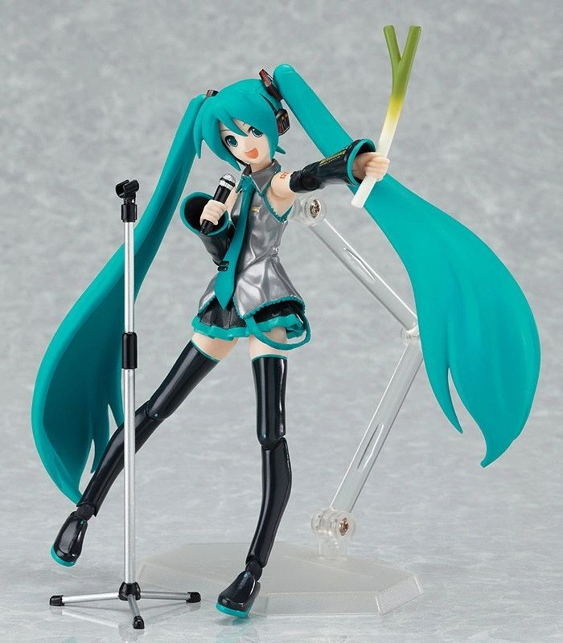
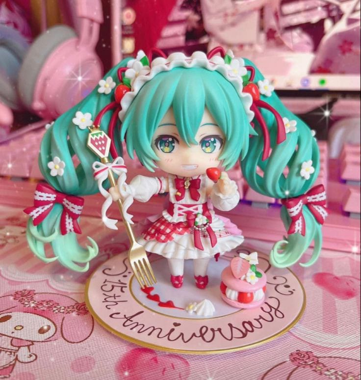
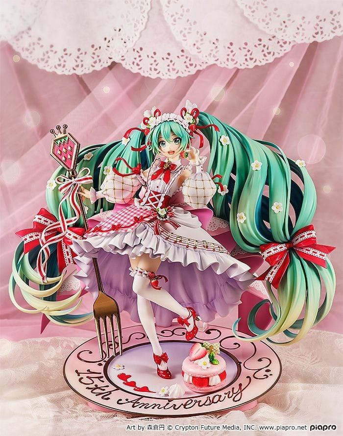
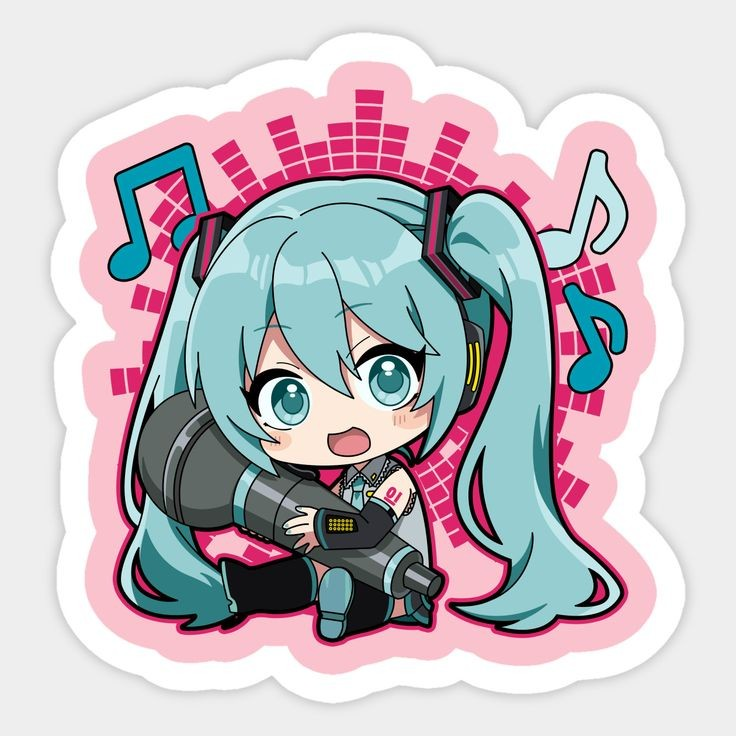
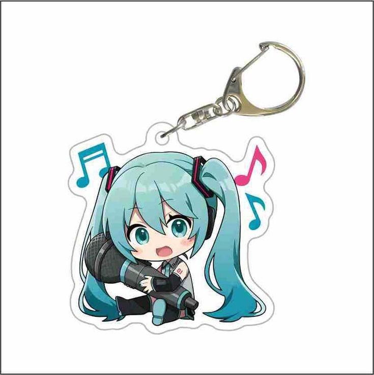
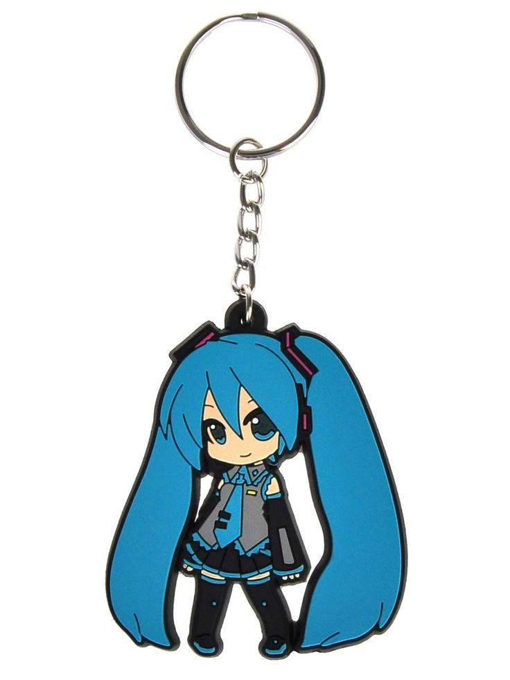

Acessórios da Hatsune Miku
Figuras e Estatuetas
Hatsune Miku tem uma vasta coleção de figuras de ação e estatuetas colecionáveis, que são adoradas por fãs em todo o mundo. Essas figuras variam de miniaturas acessíveis a modelos luxuosos, com designs inspirados em suas diferentes roupas e estilos de apresentações.
- Figma: Figuras altamente articuladas.
- Nendoroid: Versões em miniatura de Hatsune Miku com cabeças grandes e corpos pequenos.
- Scale Figures: Estatuetas detalhadas em escala, geralmente representando Miku em poses dinâmicas.
Figma

Nendoroid

Scale Figure

Bottons e Chaveiros
Bottons e chaveiros são uma forma mais acessível de demonstrar amor por Hatsune Miku. Eles podem ser usados em mochilas, roupas e chaves. Os fãs colecionam diferentes estilos, com artes únicas.
Bottons


Chaveiros

